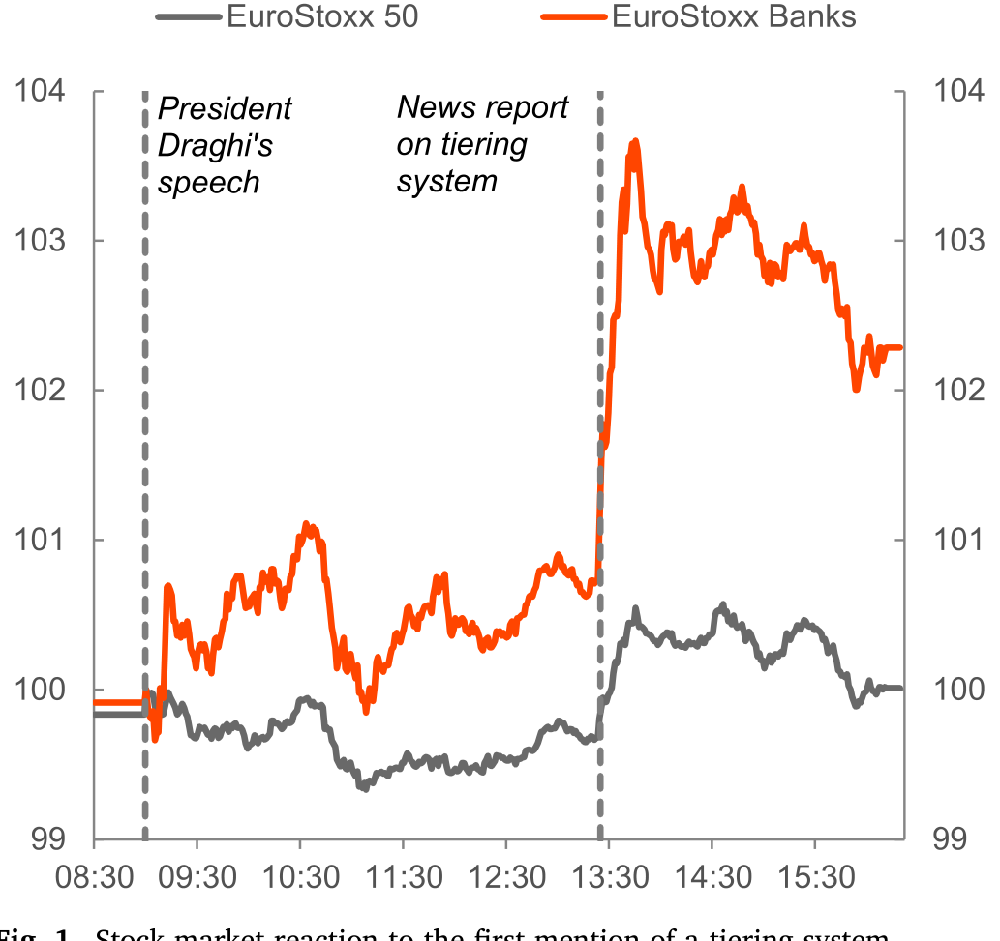
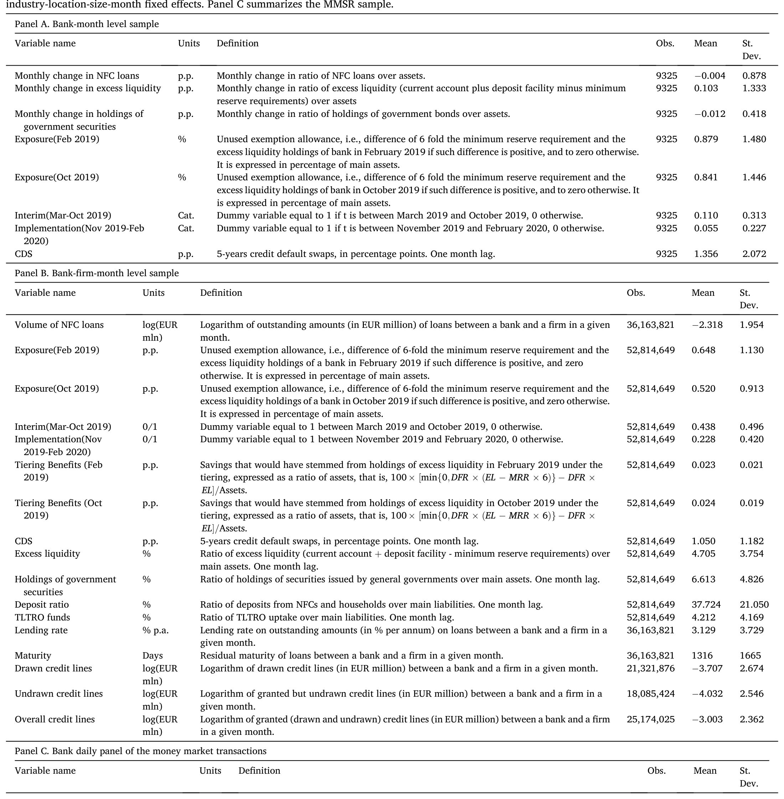
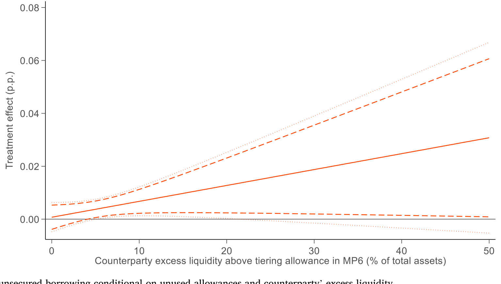
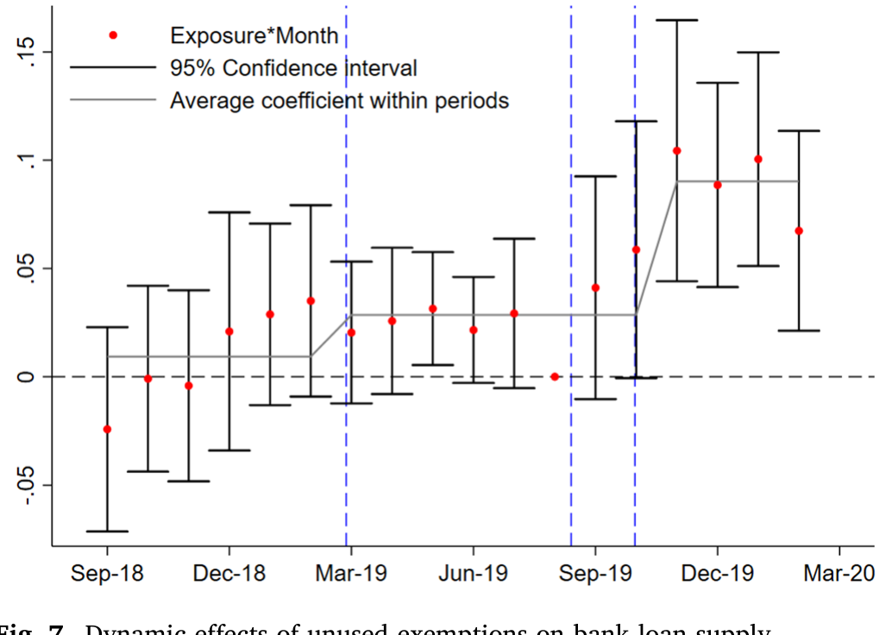
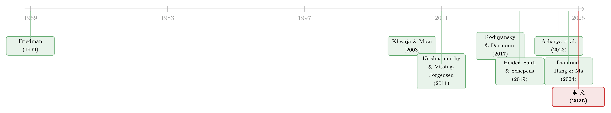

央行放再多水，也要看「水」流到了谁的池子里
本文读的是 Altavilla, Boucinha, Burlon, Giannetti & Schumacher (2025, Journal of Financial Economics)：央行准备金能不能撬动信贷，关键不在「总量」，而在「分布」。借助欧洲央行的准备金分层 (tiering) 制度做准自然实验，作者发现——把一欧元的准备金从「不缺钱」的银行挪到「缺钱」的银行手里，会多放出约 15 美分的信贷。
1 一个看似简单、却争了很多年的问题
先从一个常识说起。对一家银行而言，央行准备金 (central bank reserves) 是这个经济体里最安全的资产——没有之一。它的国内名义价值永远不会缩水，哪怕在危机里也是如此。连评级最高的国债都做不到这一点：硅谷银行 (Silicon Valley Bank) 的轰然倒下，恰恰是因为它手里那些「无信用风险」的国债，扛不住利率风险的市值损失。
既然准备金这么好，又几乎可以由央行零成本地凭空创造，那一个自然的推论是：多印一点、把银行的钱包塞得满满当当，银行不就更敢放贷了吗？
然而事情没有这么简单。围绕「准备金到底能不能撬动信贷」，学界吵了很多年，而且两派的方向恰好相反。一派说，充裕的流动性给了银行抵御挤兑的底气，于是它们更愿意把钱借出去、扩张信贷；另一派说，央行付息的准备金本身就是一笔无风险收益，银行躺着就能赚，反而会挤出 (crowd out) 真正的放贷。这两种力量谁占上风，至今没有定论。尤其在各国央行纷纷转向量化紧缩 (quantitative tightening)、要把多年放出去的准备金收回来的当下，这个问题不再是学究式的争论——它直接关系到收水会不会误伤实体信贷。
这篇论文的高明之处，是它没有去争「总量」这个老问题，而是换了一个问法：准备金在银行体系里的「分布」，会不会本身就重要？
2 真正关键的一步：把「总量」换成「分布」
作者的核心主张，可以用一句话概括：超额准备金能不能刺激放贷，取决于它落在谁手里。如果它被那些事前 (ex ante) 准备金就很少的银行拿到，那么多出来的流动性会显著增强它们抵御流动性冲击的能力，于是它们更敢放贷；而如果它早已堆在那些「不差钱」的银行那里，那这些银行大概早就到了准备金的「饱和点」(satiation point)，再多也激不起放贷的欲望。
这就把一个关于「水量」的问题，巧妙地改写成了一个关于「水往哪流」的问题。但要把这个想法做成可信的因果证据，必须找到一种与银行自身信贷需求无关的力量，去外生地改变某些银行——而且恰恰是那些「缺水」银行——持有准备金的边际意愿。
这种力量，作者在欧洲央行 (European Central Bank, ECB) 的一项政策里找到了。
3 识别策略：分层制度这把「外生的尺子」
故事的舞台，是 2019 年的欧元区。彼时负利率政策 (negative interest rate policy, NIRP) 已经实行了近五年，银行界对它压低自身盈利的「副作用」怨声载道。2019 年 3 月 27 日，时任 ECB 行长 Draghi 在一次演讲中首次松口，说「如有必要，需要思考一些既能保留负利率好处、又能缓解其副作用的措施」。几个小时后，路透社放出消息称 ECB 正准备推出分层制度——市场闻风而动，欧元区银行股应声跳涨了近 3%，明显跑赢大盘。如图 1 所示，这个高频反应说明，市场清楚地知道：这件事，对银行是真金白银的利好。

Figure 1: Stock market reaction to the first mention of a tiering system
接着，2019 年 9 月 12 日，ECB 正式拍板：在把存款便利利率 (deposit facility rate, DFR) 从 −0.40% 进一步下调到 −0.50% 的同时，推出准备金分层制度。它的设计是这样的——每家银行的超额流动性，有一部分可以豁免于负的 DFR，免除被「罚息」的命运；这个豁免额度，等于该行最低准备金要求 (minimum reserve requirement, MRR) 的 6 倍。
但真正关键的一步在于豁免额度的分配方式：它锚定在 MRR 上，而 MRR 由银行的存款规模决定——这与银行事前持有多少准备金毫无关系。于是出现了一类很特殊的银行：它们事前持有的超额流动性，还填不满自己那 6 倍 MRR 的豁免额度。作者把这部分没用上的额度叫做「未用豁免」(unused exemption / unused allowance)。
这正是识别的核心。对这些「有未用豁免」的银行来说，分层制度一夜之间把它们持有更多准备金的边际价值抬高了：以前多持准备金要被罚 −0.50%，现在在豁免额度以内是零成本甚至有利可图。于是它们有了强烈的、却与自家客户信贷需求正交(orthogonal) 的动机去多囤准备金。而按定义，这些银行恰恰是事前准备金偏低的银行——也就是作者理论里最该被「浇水」的那群。
作者把这个处理变量写成「未用豁免敞口」(Exposure)，它的定义就是论文 Table 1 里那一行：
这里 EL 是事前的超额流动性（活期账户 + 存款便利 − 法定准备金）。与之配套，作者还构造了一个「分层收益」(Tiering Benefits) 变量，衡量某行的超额流动性在分层制度下能省下多少罚息：
$$\text{Tiering Benefits}_i = \frac{\min\{0,\; \text{DFR}\times(\text{EL}_i - 6\times\text{MRR}_i)\} - \text{DFR}\times \text{EL}_i}{\text{Assets}_i}\times 100$$
这两个变量的区分很要紧：Exposure 抓的是「还想再囤准备金」的银行（缺水的），Tiering Benefits 抓的是「已经因豁免而省了大钱」的银行（多半不缺水的）。后面我们会看到，作者正是靠把这两类银行分开，才把「分布效应」从「补贴效应」里干净地剥了出来。
还有一个识别上的妙处：决定豁免额度的 MRR，其截止日（2019 年 7 月或 6 月）在 3 月那次放风之前就已经定死了。也就是说，银行没法为了多拿豁免去事后操纵自己的存款规模——这道门是预先关上的。
用一句话提炼这套识别：分层制度像一把外生的尺子，按一个与信贷需求无关的规则（6 倍 MRR），随机地给一部分「缺水」银行发了「多囤准备金」的动机。剩下的，就是看它们拿到水之后做了什么。
4 数据：把欧元区的信贷与货币市场摊开来看
作者动用了一整套 ECB 的内部微观数据，三条线索互相印证。
主力是 Anacredit——欧洲中央银行体系维护的信贷登记 (credit register)，逐笔记录欧元区银行对企业的贷款（只要单笔敞口超过 2.5 万欧元就要上报）。样本是一个 122 家银行、2,624,856 家企业、合计 3,439,580 对银企关系的面板，覆盖 2018 年 9 月到 2020 年 2 月这 18 个月，横跨 19 个国家、89 个两位数 NACE 行业、1,055 个 NUTS2 地区，能切出 3,087,276 个「行业 × 地区 × 规模 × 月份」的聚类格子。许多企业同时和多家银行有借贷关系——这一点对识别信贷供给至关重要（下一节细说）。
第二条线是 IBSI（个体资产负债表指标），按月追踪 128 家欧元区银行的主要资产负债项，让作者能看到贷款、存款、政府债持仓等的变动。第三条线是 MMSR（货币市场统计报告），约 50 家大型银行逐日上报其全部货币市场交易——担保（回购）市场约 3,000 万笔、无担保市场约 1,200 万笔，作者把它们汇总成银行（乃至「银行 × 对手方」）层面的逐日存量面板。此外还有来自 Thomson Reuters 的股价与 CDS 利差。

Table 1
5 主要结果：水流到哪，信贷就涨到哪
作者的实证分两步走，环环相扣。
第一步，钱是怎么流动的？答案是：主要通过货币市场 (money market)。分层制度落地后，「有未用豁免」的银行显著增加了自己在货币市场上的净借入，而且——这一点很关键——它们并没有因此被要求支付更高的利率，也没有遭遇期限上的配给 (maturity rationing)。与此同时，那些事前超额流动性很高的银行，则不成比例地增加了对这些「缺水」银行的货币市场放款。换句话说，分层制度像一只看不见的手，把准备金从「饱和」的银行重新分配给了「饥渴」的银行。如图 6 所示，净无担保借入的上升，正集中在那些未用豁免高的银行身上。

Figure 6: Increase in net unsecured borrowing conditional on unused allowances and excess liquidity
第二步，拿到水的银行做了什么？它们放出了更多信贷，而且贷款利率更低、期限更长。这就是全文最硬的那个数字：作者估计，把一欧元的准备金重新配置给事前准备金偏低的银行，会带来约 15 美分的信贷供给增加。
这里的识别难点，是怎么把「信贷供给」从「信贷需求」里摘出来——万一只是这些银行的客户恰好这阵子更想借钱呢？作者用的是经典的 Khwaja and Mian (2008) 方法：因为同一家企业往往同时向多家银行借款，就可以放进企业 × 时间固定效应 (firm × time fixed effects)，把任何企业层面的需求冲击吸收干净，只比较「同一家企业、同一时点」向不同 Exposure 银行借到的款有何差别。作为稳健性，作者还换用了「行业 × 地区 × 借款人规模 × 时间」的固定效应。两种做法下，结论一致：分层落地之后，高 Exposure 银行的放贷行为显著地分化了出来。图 7 的动态效应（事件研究式）显示，这种分化是在分层实施之后才出现的，之前两类银行并无系统性差异——这正是平行趋势 (parallel trends) 该有的样子。

Figure 7: Dynamic effects of unused exemptions on bank loan supply the sample period ranges from September 2018 to February 2020. Standard
机制呢？作者补了好几块拼图，把「流动性保险」这个故事钉死：
- 是「缺水又贵」的银行在驱动结果。 如果不均的准备金分布真的压制了信贷，那响应最强的，应该是事前融资成本高的银行——它们当初正是因为准备金回报太低、不划算，才优先少囤准备金、从而更缺乏流动性保险、放贷也更少。作者发现结果确实由这些高融资成本银行（borrowing 利率高、资本充足率低、CDS 利差高）驱动。
- 银行的预防性动机下降了。 有未用豁免的银行在拿到流动性后，更多地承诺了授信额度 (credit lines)。由于授信额度对放款方意味着难以预测的未来流动性需求 (Cooperman et al., 2022)，这说明银行不再那么「囤着钱以防万一」。
- 它们卖掉了政府债。 有未用豁免的银行减持了政府债持仓。国债虽不如准备金流动，但可以在担保市场上抵押融资；减持国债，意味着这些银行不再需要囤积抵押品来自保——又一个流动性保险改善的旁证。（央行抵押品资格如何改变一只债券的命运，可参见《央行的「合格清单」：一只债券一旦能抵押，会发生什么？》。）
- 没有「乱放贷」。 一个自然的担心是：拿到水的银行会不会饥不择食，把钱借给更高风险的借款人、造成信贷错配？作者找不到这种证据。
而作为对照，那些没有未用豁免的银行——包括事前超额流动性高、因而分层收益 (Tiering Benefits) 也高的银行——并没有改变自己的放贷政策。这恰恰排除了「这只是负利率被部分豁免、银行口袋鼓了所以放贷」的纯补贴解释：真正起作用的，是「缺水银行被浇了水」，而不是「所有银行都少交了点罚息」。
6 一个极简的概念框架
这篇论文不是结构模型论文，但作者用一个极简的概念框架给上面的故事提供了骨架，值得一提。它的逻辑出发点是：在一个流动性极度充裕、ECB 随时准备通过再融资操作满足任何流动性需求的时期，准备金的供给可以近似看作完全弹性的。于是分析的全部重心，就落在了准备金的需求一侧。
框架把准备金看作为银行提供独特流动性服务的资产：持有准备金能让银行更好地为自身的流动性冲击「投保」，但持有也有机会成本（在负 DFR 下尤为明显）。一家银行的最优准备金持有，取决于它的流动性需求强度与其资金成本的权衡——融资成本越高的银行，事前越不划算去多囤准备金，于是停在更低的准备金水平、保险也更薄。分层制度做的，正是外生地降低了「缺水」银行多囤准备金的成本，把它们往满足点的方向推了一程。
这个框架还给出一个可检验的推论，被作者用来反向验证「分布确实压制了信贷」这一命题：如果不均的分布真的拖累了信贷，那么对分层响应最强的、有未用豁免的银行，事前就应该有更高的资金成本。实证结果——结果确实由高融资成本银行驱动——与这个推论严丝合缝。
这是个 conceptual framework，不是带有显式求解的动态规划模型。它的价值在于把直觉组织成可检验的命题，而非给出可校准的弹性。读者不必期待这里有一组结构参数。
7 文献脉络
把这篇论文放回它生长的那条线上，会看得更清楚。
最上游，是 Friedman (1969) 的「货币最优数量」之问——准备金作为安全资产，到底该供给多少。中间隔了几十年，量化宽松 (quantitative easing) 把这个抽象问题变成了滚烫的现实。早期研究主要从一般均衡的角度看 QE：Krishnamurthy and Vissing-Jorgensen (2011) 关注资产价格的反应；Acharya et al. (2019) 研究非常规货币政策的真实效应。

接着，问题聚焦到准备金与银行放贷的微观链条上，但结论却是分裂的。Rodnyansky and Darmouni (2017)、Kandrac and Schlusche (2021) 发现，在美联储 QE3 之后增加准备金持有的银行放贷更多；Acharya et al. (2023)、Acharya and Rajan (2023) 则提醒，央行用准备金「淹没」银行，未必真能扩张流动性。另一支文献干脆把注意力从「准备金总量」转向了「准备金本身」：Diamond, Jiang, and Ma (2024) 用自然灾害做外生变异估出存贷需求弹性，反推出准备金增加会挤出放贷。
在欧洲这一侧，负利率催生了一支并行的文献：Heider, Saidi, and Schepens (2019) 研究负政策利率下的银行放贷，Bottero et al. (2022) 用信贷登记数据看负利率下的组合再平衡。与本文最近的，是 Fuster, Schelling, and Towbin (2021)——他们发现瑞士引入分层后，受益最大的银行反而提高了贷款利差、少冒险；本文则把镜头对准了规模更大、更异质的欧元区货币市场，给出了相反方向的结论。
本文站在这条线的交汇处：它不去争「总量」是挤入还是挤出，而是用一个干净的准自然实验告诉你——分布和总量一样重要，哪怕在准备金极度充裕、政策利率触底的时候。同样是「央行政策如何在异质银行间产生不同传导」，《同样的加息，为什么德国的银行和西班牙的银行走向相反？》讲的是另一个侧面，可以对照着读。
8 评论与延伸（Q&A + 研究方向）
(a) 几个可能的疑问
Q：「分层收益」和「未用豁免」到底有什么区别，为什么非要分开？
这是全文识别的命门。分层收益 (Tiering Benefits) 衡量一家银行因豁免而省下的罚息——它在那些超额流动性本来就高的银行身上最大。未用豁免 (Exposure) 衡量的是「还想再囤但没填满」的额度——它在缺水银行身上才为正。如果不分开，你会把「口袋变鼓的补贴效应」和「缺水银行被浇水的分布效应」混成一团。作者证明结果由 Exposure（而非 Tiering Benefits）驱动，才说明起作用的是再分配，不是普惠式的减负。
Q：会不会只是这些银行的客户恰好更想借钱（需求侧），而非银行更愿意放（供给侧）？
这正是 Khwaja-Mian (2008) 要解决的。靠企业 × 时间固定效应，只在「同一家企业、同一时点」内部比较不同银行的放款，任何企业层面的需求冲击都被吸收掉了。换用行业 × 地区 × 规模 × 时间固定效应后结论不变，进一步降低了需求解释的可能。
Q：那 15 美分是怎么来的，可信吗？
它来自「准备金重新配置 → 信贷增加」的换算：把一欧元准备金挪给事前低准备金银行，对应约 15 美分的信贷增量。它依赖一个关键假设——事前高准备金的银行已到饱和点，因而转出准备金时既不要求更高利率、也不收缩对企业的信贷。作者用「高流动性银行放贷未变、货币市场利率未升」等事实为这个假设背书，但它终究是个假设，估计值应被理解为在该假设下的合理量级，而非精确点估。
Q：股价跳涨 3% 不会是别的消息驱动的吗？
作者用的是放风消息发布后几小时内的高频反应，并以更广的市场指数作对照——银行股显著跑赢，时间窗很窄。它不能完全排除同期其他信息，但作为「市场认为分层对银行是真利好」的佐证已相当有力。它本身不承担因果识别的主力，主力是后面的微观面板。
Q：和瑞士的分层实验结论相反，怎么理解？
Fuster et al. (2021) 发现瑞士银行在分层后抬高贷款利差、少冒险。作者的解释是市场结构不同：欧元区货币市场更大、更异质，准备金的事前分布明显偏向那些已近饱和点的银行；在这种格局下，分层通过提高「交易（再分配）的收益」来刺激放贷。结论方向的差异，本身就提示了「分布」这个变量的分量。
Q：这对当下的量化紧缩意味着什么？
直接含义是：收水时，「收谁的水」比「收多少水」更值得关心。如果紧缩按比例从所有银行抽走准备金，可能把一部分缺水银行重新推回流动性约束、压制其信贷；反之，若能让准备金继续向高需求银行沉淀，总量下降对信贷的伤害会小得多。
(b) 几个可能的研究问题与提案
1. 量化紧缩的「分布版」对称性检验。
【经济故事】本文证明的是「把水浇给缺水银行」会增信贷；那么反过来，QT 抽水时，准备金分布的恶化是否会不对称地压制缺水银行的信贷？如果分布效应在收紧端更剧烈，政策含义就大不相同。 【可行性】中。2022 年 9 月分层制度随加息终止、随后 ECB 进入 QT，数据上有现成的「反向事件」。难点在于加息与 QT 同时发生、且不再有分层这把干净的外生尺子，识别需要另找工具（如各行 TLTRO 到期的外生时点差异）。
2. 准备金再分配会外溢到公司债市场吗？
【经济故事】缺水银行拿到流动性后减持了政府债（少囤抵押品）。一个自然的延伸是：它们会不会也调整公司债持仓、或改变对公司债的做市与回购融资意愿，从而影响信用市场的流动性？这把「准备金分布」直接接到了信用利差上。 【可行性】中。欧元区可用 MMSR（回购）+ 证券逐笔持有数据 (SHS) 匹配到本文的 Exposure。识别仍可沿用分层制度做处理强度，难点是公司债持仓变动的需求侧干扰更多。
3. 外资银行分支是不是再分配链条上的「漏水口」？
【经济故事】货币市场把水从饱和银行送到缺水银行；但若缺水银行是某跨境集团在欧元区的分支，它可能把流动性通过内部市场调回母国，而非投放本地信贷。这会削弱分层的本地传导。 【可行性】中偏低。需要银行集团的内部资金往来数据（往往不可得），可用母行国别 × Exposure 的交互做间接检验，识别较弱。
4. 授信额度承诺上升后，真实动用率如何？
【经济故事】本文发现缺水银行更多地承诺了授信额度，解读为预防性动机下降。但承诺不等于动用——一个值得追问的问题是，疫情这种总量流动性冲击来临时，这些「多承诺」的银行是否真的扛住了集中提款，验证流动性保险的实效。 【可行性】高。Anacredit 同时有 drawn / undrawn credit lines，样本末端正好接近 2020 年初的疫情冲击，可做一个干净的「承诺—动用」前后对比。
我的判断
这篇论文最漂亮的地方，是把一个被反复争论却始终缠夹不清的「总量」问题，重新提问成了一个可识别的「分布」问题，并且用分层制度这把恰到好处的外生尺子，把识别做得近乎教科书般干净——预定的截止日、与需求正交的豁免规则、Khwaja-Mian 的需求剔除、Exposure 与 Tiering Benefits 的对照，每一环都在堵住一个替代解释。15 美分这个数字本身或许会随设定浮动，但「分布与总量同等重要」这个定性结论，我认为是稳的。
要说对识别的担心，主要有两点。其一，那个换算成 15 美分的桥梁，重度依赖「高准备金银行已达饱和点、因而转出准备金不要价、也不缩贷」的假设；这个假设在证据上被旁证支持，但并非被直接估计出来，量级解读上要留有余地。其二，样本期止于 2020 年 2 月，恰好停在疫情前——这躲开了疫情的混淆，却也意味着我们看到的是一个流动性极度充裕、供给完全弹性情形下的故事；它能否平移到准备金稀缺、供给不再弹性的紧缩环境，本文给不出答案，而这恰恰是当下最该回答的问题。
我接下来最想看到的，是把同一套识别思路搬到 QT 的「反向实验」上，以及把准备金的再分配一路追到信用市场和外资银行的跨境内部市场里去——那才是检验「分布效应」究竟有多普适的试金石。
参考文献
- Acharya, V.V., Eisert, T., Eufinger, C., Hirsch, C.W. (2019). Whatever it takes: the real effects of unconventional monetary policy. Review of Financial Studies 32, 3366–3411.
- Acharya, V.V., Chauhan, R.S., Rajan, R.G., Steffen, S. (2023). Liquidity Dependence and the Waxing and Waning of Central Bank Balance Sheets. Working Paper, New York University.
- Acharya, V.V., Rajan, R.G. (2023). Liquidity, Liquidity Everywhere, Not a Drop to Use — Why Flooding Banks With Central Bank Reserves May Not Expand Liquidity. Working Paper, New York University.
- Bottero, M., Minoiu, C., Peydró, J.-L., Polo, A., Presbitero, A., Sette, E. (2022). Negative monetary policy rates and portfolio rebalancing: evidence from credit register data. Journal of Financial Economics 146, 754–778.
- Diamond, W., Jiang, Z., Ma, Y. (2024). The Reserve Supply Channel of Unconventional Monetary Policy. Working Paper.
- Friedman, M. (1969). The optimum quantity of money. In The Optimum Quantity of Money and Other Essays. Aldine, Chicago.
- Fuster, A., Schelling, T., Towbin, P. (2021). Tiers of joy? Reserve Tiering and Bank Behavior in a Negative-Rate Environment. Working Papers 2021-10, Swiss National Bank.
- Heider, F., Saidi, F., Schepens, G. (2019). Life below zero: bank lending under negative policy rates. Review of Financial Studies 32 (10), 3728–3761.
- Kandrac, J., Schlusche, B. (2021). Quantitative easing and bank risk taking: evidence from lending. Journal of Money, Credit and Banking 53 (4), 635–676.
- Khwaja, A., Mian, A. (2008). Tracing the impact of bank liquidity shocks: evidence from an emerging market. American Economic Review 98 (4), 1413–1442.
- Krishnamurthy, A., Vissing-Jorgensen, A. (2011). The effects of quantitative easing on interest rates: channels and implications for policy. Brookings Papers on Economic Activity, 215.
- Rodnyansky, A., Darmouni, O.M. (2017). The effects of quantitative easing on bank lending behavior. Review of Financial Studies 30 (11), 3858–3887.